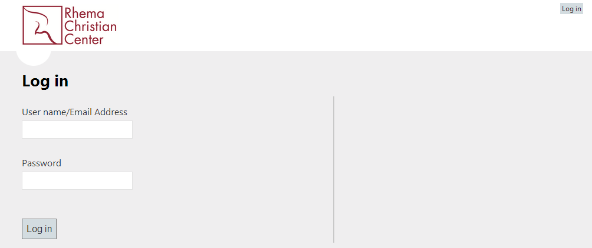
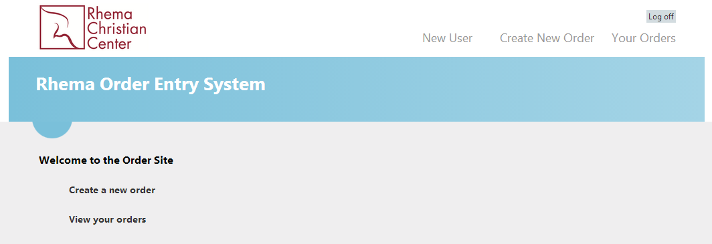
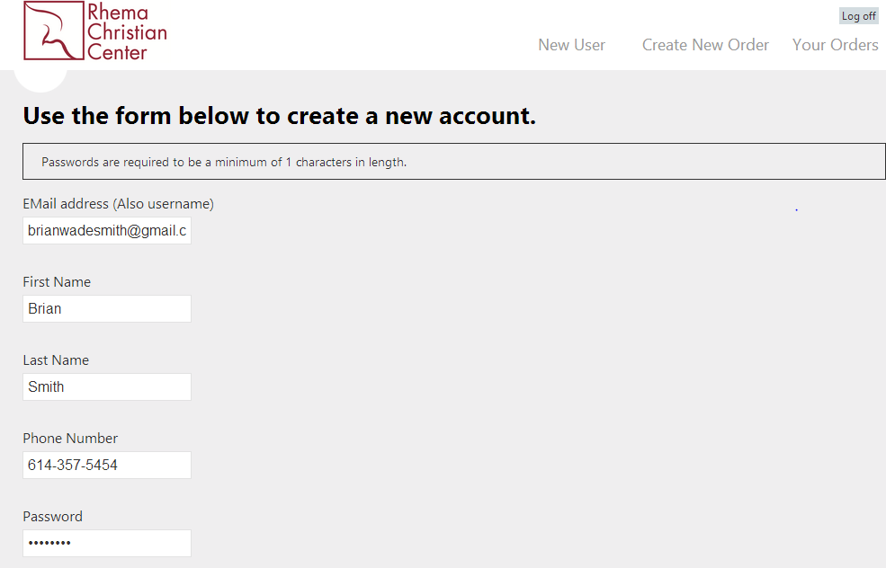
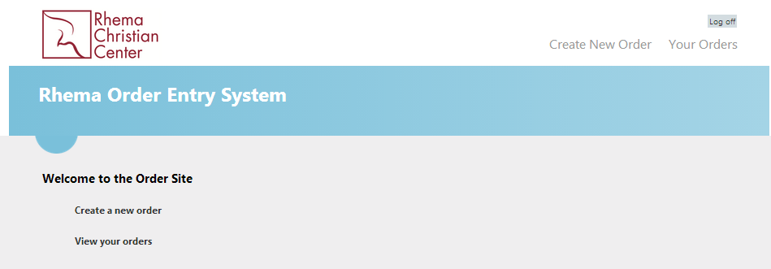
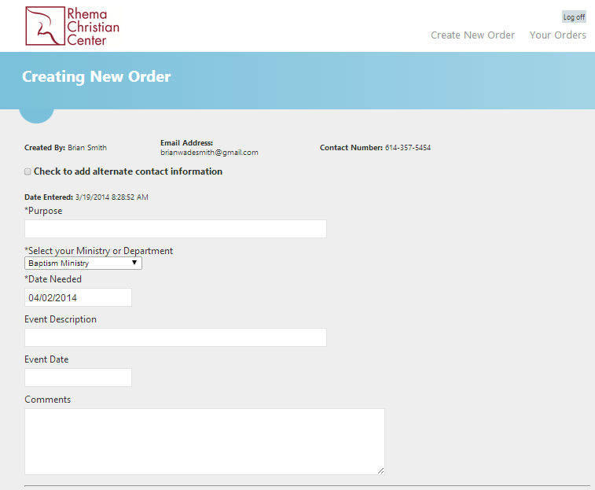
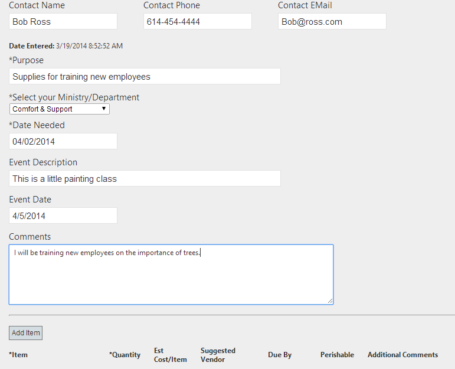
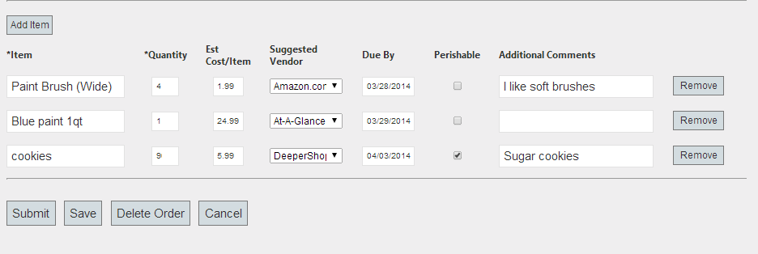
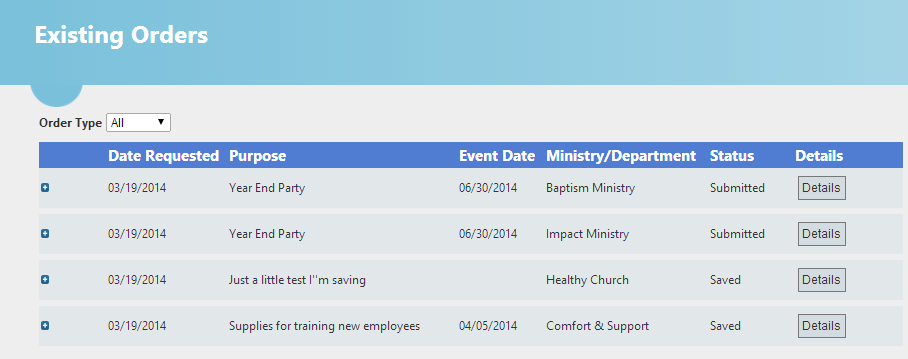
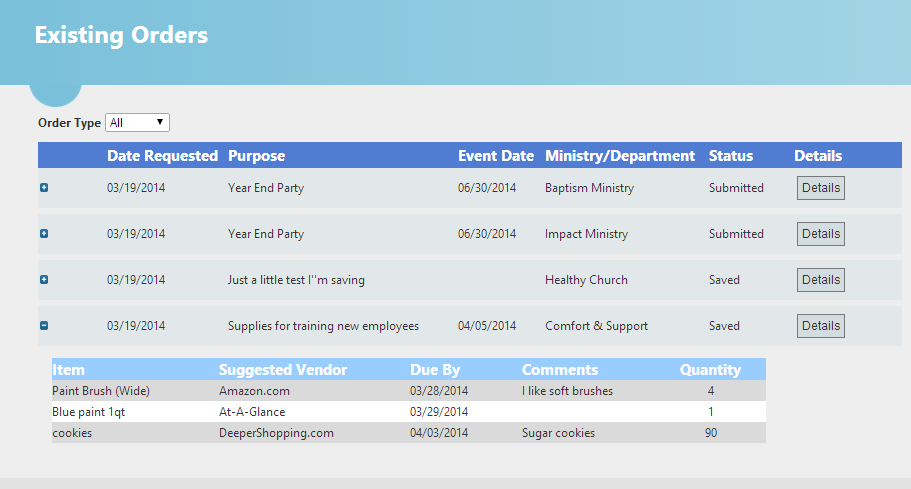

Client: Rhema Christian CenterStack: VB.NET · MS Access · SharePoint 365Role: Solo Developer
The purpose of this supply order form was to provide a method for employees of Rhema Christian Center
to easily submit requests for supplies. They already had a system built within SharePoint 365, but its
functions were limited and not all employees had access. Staff are spread throughout the country but all
have internet access. I exported their existing database from SharePoint to an Access database, allowing
me to build upon established internal processes. A live connector between SharePoint and the Access
database ensures any additions made in SharePoint appear in this application — and new orders entered
here are automatically sent to SharePoint for fulfillment. Users receive email notifications at each step
of their order lifecycle.
Authentication
The initial page presents a login screen. Credentials are pulled from the Access database with
passwords stored in an encrypted state. Failed attempts are caught and surfaced before proceeding.

Login · credentials validated against encrypted Access database
Once logged in, users are presented with options based on their role. Administrators have additional
access to user management; standard users see only the order-related options.

Dashboard · options vary by role (admin vs. standard user)
User Management
Administrators can add new users by collecting basic profile information. Non-administrator
accounts do not have access to this screen.

Admin: new user profile form

Standard user: create-user option hidden
Order Creation
Creating a supply order collects all required information. The Ministry dropdown is populated
dynamically from the database — as Ministries and Departments are added or removed in SharePoint,
the change is replicated here automatically. Users can submit the order, save it for later,
delete it, or cancel any changes.

Order form · Ministry list synced from SharePoint

Order actions: submit · save · delete · cancel

Saved orders are accessible from the Your Orders page
Order Management
The Your Orders page shows all submitted, saved, and completed orders. Orders in the submitted
state have been sent to SharePoint for processing; once fulfilled in SharePoint, the record is
updated here automatically. Orders can be expanded to view item details, and saved orders can
be reopened for editing, re-submission, or deletion.

Order history · status synced from SharePoint in real time

Expanded order detail · saved orders re-open for full editing